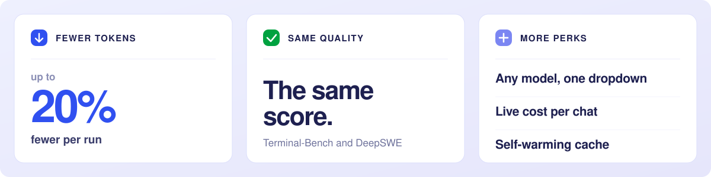
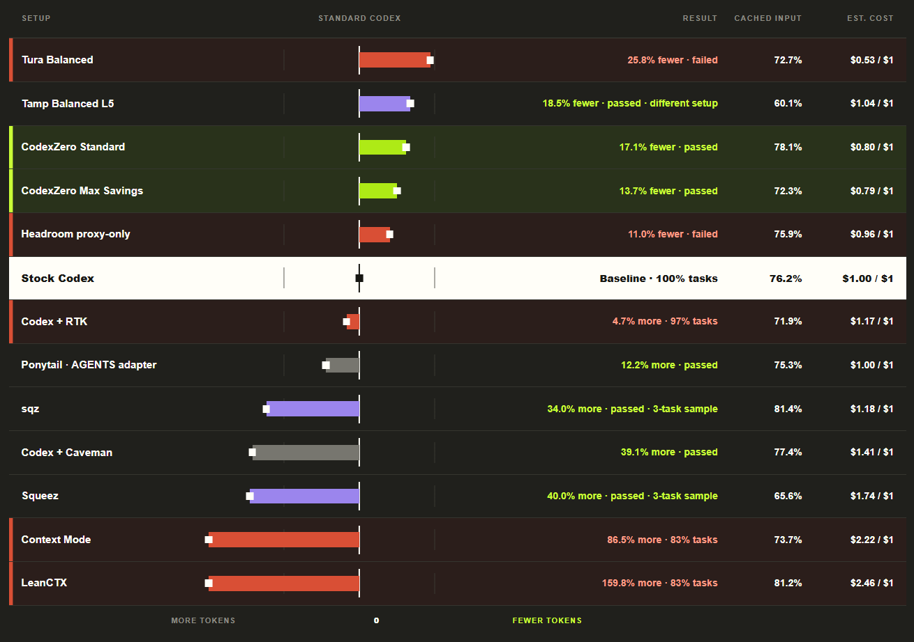
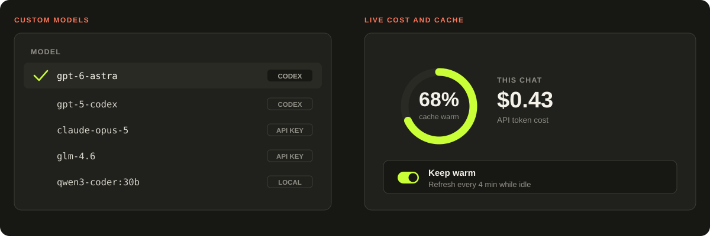
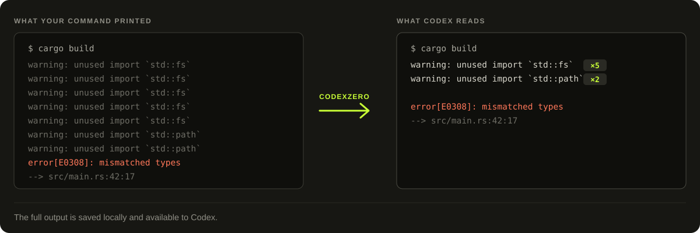
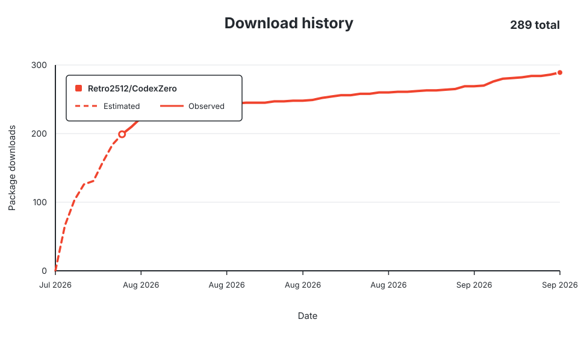

CodexZero reduces repeated command output so Codex uses fewer tokens. It also adds custom models, a live cost counter and a cache warmer to the desktop app.

Install
For Windows x64, Intel Mac and Apple silicon Mac.
Windows
irm https://raw.githubusercontent.com/Retro2512/CodexZero/main/scripts/bootstrap.ps1 | iex
macOS
curl -fsSL https://raw.githubusercontent.com/Retro2512/CodexZero/main/scripts/bootstrap.sh | sh
Windows installer · macOS installer · Download packages
Commands
| Command | Action |
|---|---|
codex-zero run |
Run CodexZero. |
codex-zero savings |
See your token savings. |
codex-zero stock |
Run regular Codex. |
The numbers

We ran the same 12 software tasks, three times each, through stock Codex and through CodexZero.
Both scored 29 out of 36. CodexZero used 3.89 million fewer tokens, a reduction of 14.63%.
Full benchmark comparison
| Setup | Score | Total tokens | vs. stock Codex |
|---|---|---|---|
| Codex | 29/36 | 26,580,391 | baseline |
| CodexZero | 29/36 | 22,691,418 | 14.63% fewer |
12 tasks · 3 repetitions per setup

What it adds

Custom models in the Codex dropdown. Add Claude, Z.ai or a local model alongside your Codex models. Switch between turns.
Settings → Agent → Custom models · setup and supported APIs
Live cost and cache status. The context ring shows your conversation's API token cost and estimated cache warmth. Enable Keep warm to refresh the cache while the chat is idle.
Settings → Agent → Context cache · cache behaviour and pricing
On Windows, quit Codex, then launch the desktop features:
codex-zero desktop --providers
How it works

- Your command runs.
- The full output is saved to your disk.
- Lines that repeat get collapsed into a count.
- Codex receives the shorter result, or the original if no tokens are saved.
Settings and compatibility
Modes and commands
Standard is the default. It uses concise instructions and Codex's normal tools.
codex-zero mode standard
Focused can batch independent tool calls.
codex-zero mode focused
safe uses regular Codex tools and instructions. max-save is an alias for Standard.
Pick a model for one run:
codex-zero run --model gpt-6-astra
Run a configured batch of checks:
codex-zero run-checks verify --summary
Compatibility
- Windows x64 · Intel Mac · Apple silicon Mac
- Codex CLI and Codex Desktop
- Node.js 20+ if you're building from a source checkout
Release packages include the runtime.
Quit Codex completely before running codex-zero desktop.
More
Architecture · Measurement · Custom models · Cache research · Contributing · Security · Uninstall
